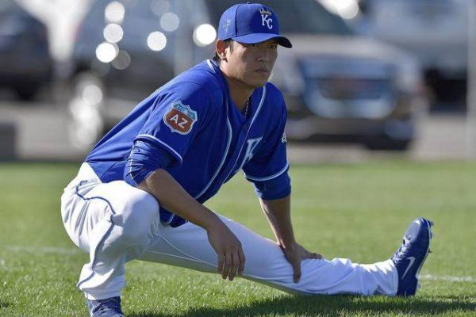

2016年3月7日 上午11:41
2016年3月7日 上午11:41
（中央社記者曹宇帆洛杉磯6日專電）堪薩斯市皇家隊春訓熱身賽第5戰對決洛杉磯天使隊，靠著中繼投手王建民等無失分的優質表現，替球隊守住勝果拿下春訓熱身賽首勝，總教練約斯特很滿意。
這是王建民熱身賽第2度登板，美西時間2日出戰德州遊騎兵，3局上中繼登板投出1個3振被敲出1支安打無失分。
今天皇家對戰天使，王建民中繼第6、7局，也是投出1個三振，被敲出1支安打無失分，連續2場比賽王建民都沒有失分。
「堪薩斯城明星報」（Kansas City Star）引述美聯社的報導說，基伊（Dillon Gee）與王建民各投兩局沒有失分。
報導說，至於艾雷拉（Kelvin Herrera）、佛林（Brian Flynn）與龐德斯（Brooks Pounders），則是各投1局沒有失分。
報導說，約斯特（Nod Yost）指出，「我們今天的投球令人滿意」。
此外，堪薩斯城明星報的報導也提及王建民的優質表現，說資深右投王建民投兩局沒失分，只被擊出1支安打。1050307
